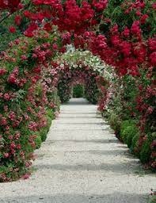
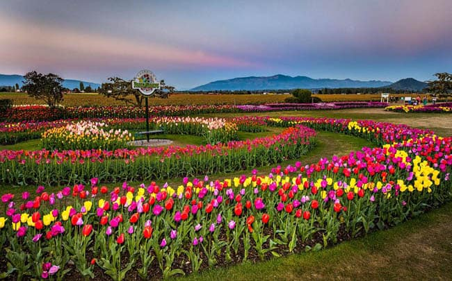
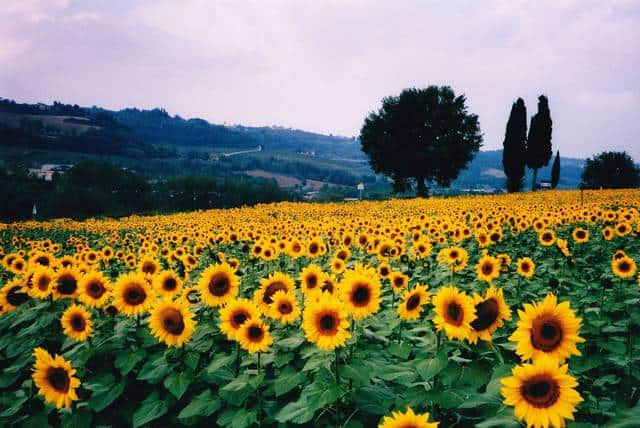

<!DOCTYPE html>
<html lang="pt-BR">
<head>
    <meta charset="UTF-8">
    <meta name="viewport" content="width=device-width, initial-scale=1.0">
    <link rel="stylesheet" href="style.css">
    <link rel="preconnect" href="https://fonts.googleapis.com">
    <link rel="preconnect" href="https://fonts.gstatic.com" crossorigin>
    <link href="https://fonts.googleapis.com/css2?family=Bai+Jamjuree:ital,wght@0,200;0,300;0,400;0,500;0,600;0,700;1,200;1,300;1,400;1,500;1,600;1,700&display=swap" rel="stylesheet">
    <title>Em busca em um lugar novo /title>
</head>
<body>
    <main>
        <div class="passo ativo" id="passo-0">
            
            <p>Um dia desses, estava dormindo quando derepente acordei em um jardim lindo onde varias borboletas iam por um caminho,curiosa fui atras </p>
            <button class="btn-proximo" data-proximo="1">jardim florido</button>
            <button class="btn-proximo" data-proximo="2">primeiro jardim onde estava </button>
        </div>
        <div class="passo" id="passo-1">
            <p>Você começa no segundo jardim onde era muito colorido a falna e á flora</p>
            <button class="btn-proximo" data-proximo="3">ir para proximo jardim</button>
            <button class="btn-proximo" data-proximo="4">Desistir e voltar para casa</button>
        </div>
        <div class="passo" id="passo-2">
            <p>no segundo jardim , você  percebe que tem varias frutas mais não sabe se é venenoso então você decidi procurar a próxima pista onde daria num outro lugar. Por qual você começa?</p>
            <button class="btn-proximo" data-proximo="5">Investigar as pistas</button>
            <button class="btn-proximo" data-proximo="6">Explorar onde você esta</button>
        </div>
        <div class="passo" id="passo-3">
            <p>No jardim perto das frutas, você encontra uma antiga inscrição apontando que a próxima pista leva a um lugar diferente e escondido entre as flores</p>
            <button class="btn-proximo" data-proximo="7">Seguir em frente </button>
        </div>

        <div class="passo" id="passo-4">
            
            <p>Você decide que a aventura é grande demais e volta para casa, mas sempre se pergunta o que teria
                encontrado.</p>
        </div>

        <div class="passo" id="passo-5">
            <p>No lugar escondido, você descobre um corredor antigo escondido, apontando que a próxima
                lugar que Você não conhece.</p>
            <button class="btn-proximo" data-proximo="7">Viajar para o /button>
        </div>

        <div class="passo" id="passo-6">
            <p> você encontra uma caverna escondida, mas ela leva a um beco sem saída.</p>
            <button class="btn-proximo" data-proximo="8"> voltar e explorar o lugar</button>
        </div>

        <div class="passo" id="passo-7">
            <p>explorando, Você se depara com um rio bifurcado com duas opções.</p>
            <button class="btn-proximo" data-proximo="9">Seguir pelo rio à esquerda</button>
            <button class="btn-proximo" data-proximo="10">Seguir pelo rio à direita</button>
        </div>

        <div class="passo" id="passo-8">
            <p>De volta, você Agora,conhece um animal que te cheira pedindo carinho</p>
            <button class="btn-proximo" data-proximo="7">Seguir fazendo carinho </button>
        </div>

        <div class="passo" id="passo-9">
            <p>O rio à esquerda leva você a uma cachoeira escondida com inscrições antigas que revelam a entrada de
                casa enorme.</p>
            <button class="btn-proximo" data-proximo="11">Explorar a casa</button>
        </div>

        <div class="passo" id="passo-10">
            <p>O rio à direita termina em uma área pantanosa. Apesar de belas vistas, não há sinais de nada
                aqui.</p>
            <button class="btn-proximo" data-proximo="12">Retornar e tentar o outro rio</button>
        </div>

        <div class="passo" id="passo-11">
            
            <p>Dentro da casa, você descobre tesouros inimagináveis e decide cuidar da casa</p>
        </div>

        <div class="passo" id="passo-12">
            <p>Retornando e escolhendo o rio à esquerda, você finalmente encontra a cachoeira escondida e as inscrições
                que levam à uma casa enorme.</p>
            <button class="btn-proximo" data-proximo="11">Explorar a casa</button>
        </div>
    </main>
    <script src="script.js"></script>
</body>
</html>